孖仔帮与您分享双胞胎育儿经
点击蓝字
关注我们
文|圆圈妈
“我只觉得我手脚都在发抖，拿笔写字都歪歪斜斜的，护士让我签名的时候，我还问了句，我姓什么来着？”
以上是圆圈爸在圆圈兄弟刚出生被送入院，在新生儿科办理入院手续时的怂样！
原话，无删减版！
01
前几天孖仔帮双胞胎爸爸专属群有一宝爸沮丧地说：“孕32周的媳妇不得不提前剖腹产了…”。
隔着电脑屏幕，我深深感受到那位宝爸的迷茫和无助。
32周，才8个月大的两胎儿，意味着体重可能只有3斤多，可能要住温箱，可能要比其他早产儿经历更多生死考验。
即便顺利出院后，各种喂养困难也会接踵而来…
未来的路艰辛而漫长…
这让我想起三年前我们去领圆圈出院的时候，正好看到一位新生儿宝宝被收入院，护士抱着宝宝，边上站着一脸凝重，偷偷抹泪的宝爸。
是的，我没看错！
这个1米85的壮汉，在护士小姐姐的指引下，签着各种类似生死状的知情书，暗自拭泪。
我和圆圈爸交换了下眼神，表示深深的同情，那种感同身受的心情油然而生。
兄弟，过来人呐！没事！会过去的！不哭！
02
今天圆圈妈想写写圆圈兄弟早产后入住NICU后那些心惊肉跳的大事小事，并以过来人经验给到双胞胎家庭在应对两新生儿住院时的一些建议。
圆圈兄弟从娘肚里蹦出来，简单清洗之后，就被已经准备就绪的新生儿科医生火速收入NICU，圆圈爸也被医生叮嘱必须随叫随到。
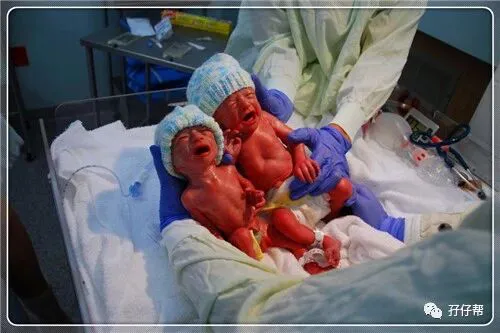
据说，这个才25岁的大男孩签入院告知书的时候，紧张到忘记姓啥名啥。
送入院的当晚，护士就电话通知我们把尿不湿，湿巾纸和纸巾送到新生儿科，我们一群人居然都没有准备，只好在留医部附近小商店买些凑合着用。
圆圈入院第三天下午，接到新生儿科电话，圆圈兄弟开奶后有呕吐腹胀，B超显示肠胃发育不完善，不能继续喂奶，只能输液打营养针。
当晚，在熟人的帮助下，圆圈爸换上无菌服第一次进入NICU零距离接触到圆圈兄弟。
此时的他们才出生72个小时，头上正扎着针管，眼睛都没睁开。
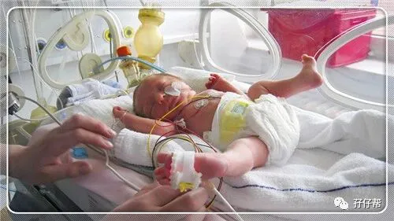
圆圈入院第四天凌晨，又接到新生儿科电话，圆圈兄弟接连出现发绀，呼吸暂停的现象，不得不用上呼吸机。
圆圈爸三更半夜被医生叫去新生儿科，又签了很多莫名其妙的知情书。
圆圈入院第五天晚上，终于没有电话响起了。
我们把手机充满电，调到最大音量，隔三差五盯着手机看，希望电话响起又害怕有来电。
我和圆圈爸作为新晋父母的那种矛盾，忐忑，恐慌，焦虑的心情充斥着医院整个爱婴区…
圆圈入院第六天上午，又接到新生儿科电话。还好，虚惊一场，是护士通知尿不湿用完了。
留医部规定每周有两次探视新生儿的时间。我当时还不能下床，于是乎圆圈爸和圆圈爷爷奶奶分头行动。
圆圈爸和圆圈爷爷负责找医生沟通病情，圆圈奶奶去探视区看她的两宝贝孙子。
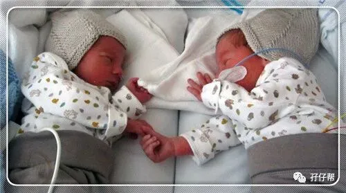
一个是刚当爸爸，一个刚当爷爷，都紧张得不行。每次我让圆圈爸复述医生的病情介绍，居然说紧张到全忘记了。
后面拿着手机把医生的一字一句全部录音了，前提是经过医生允许哦！
早产儿有三大难关：喂养关，呼吸关，感染关。
圆圈兄弟经历了喂养关和呼吸关，所幸没有发生感染。
圆圆入院9天，圈圈入院11天，哥俩陆续出院，而我则开启我的苦逼双胎育儿之路。

03
在圆圈兄弟住院期间，所有人都吃尽了苦头，狼狈不堪。现总结些经验，给众多双胞胎家庭参考。
注意：这些细节的主要执行者是双胞胎爸爸，请宝爸们搬凳子过来，做好笔记，圆圈妈要开始敲黑板划重点咯。
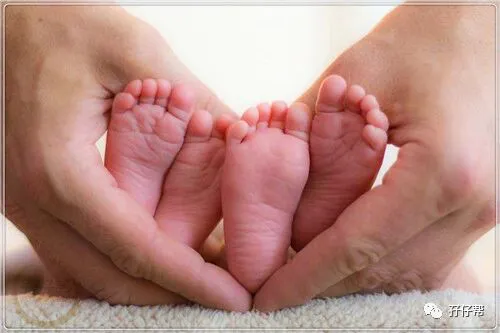
★新手爸爸统领大局，及时响应医院召唤
新生儿出生后，会有很多事情忙碌，尤其是两宝宝同时被收入新生儿科，宝爸要两边科室来回跑。
若分身无术，可以让宝爸主要负责新生儿科事宜，其他家属协助宝妈的术后护理。
一般若无特殊情况，医院都会指定让宝爸办理新生儿的入院手续，并与其交代患儿情况。
新手爸爸最好从一而终持续跟进，万一后续有其他问题，可以迅速响应并协助配合医生。
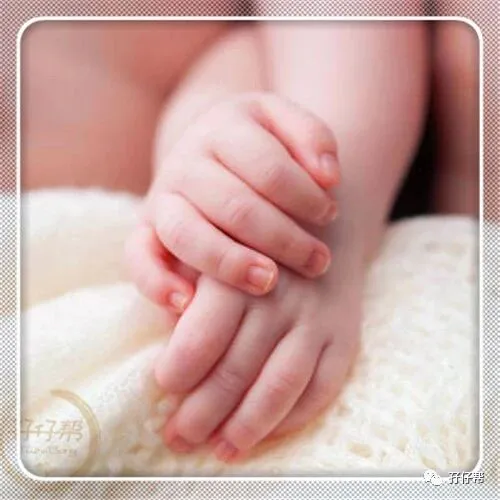
新生儿入院手续和普通入院流程差不多，签入院知情书和了解一些注意事项等，新生儿是特殊病患，可能会有其他特别要求，各医院有不同规定，按照医生护士的要求去办即可。
因此，新手宝爸莫慌，统筹大局，做好最重要的事情，其他零碎东西让其他家属协助准备即可。
至于宝爸是否坚守在手术室外等宝妈，这个两口子协商好，免得日后有疙瘩。

圆圈爸先斩后奏，没有在手术室外迎接我。虽然可以谅解他的分身无术，但是心里总是有疙瘩的。
我的娘家人都不在，迎接我的只有婆婆和小姑子，感觉自己被抛弃了。
因此，宝妈生娃的时候，宝爸若担心忙孩子顾不了妻子，请把宝妈的娘家人都召唤过来吧！
★准备好两宝宝的入院用品
两宝宝的入院用品要提前备好，必备的物品有尿不湿，湿巾纸和纸巾（不同医院要求不一样））。
两宝宝衣物看医院规定，有些医院有婴儿专用的病号服，不需要家属提供。
做好尿不湿随时会断供的准备，在医院还没打电话催你之前，最好就先囤货，以备不时之需。
目前市面上有专为早产儿和低体重儿设计的尿不湿P码，有需要的家庭可以了解试用下。
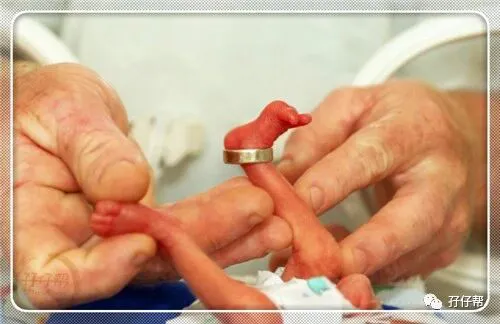
在此特别感谢孖仔帮双胞胎爸爸群一位热心宝爸，若不是他的建议，我还以为全部新生儿都会用NB码。
早知道三年前我就该给圆圈用P码，因为5斤多的圆圈用上NB码依然很大，松松垮垮的，不服帖，老是漏尿。
其他宝宝用品清单，大家可以根据各自家庭喂养方式酌情增减。
孖仔帮前几期文章有提到双胞胎宝宝囤货清单，详情请参考《 看过这份最简单的双胞胎宝宝用品囤货清单，其他的都是将就》，关注孖仔帮，对话框输入“222”即可阅读。
★让母婴分离的早产儿宝宝尽快喝上母乳
虽然两宝宝和宝妈分开了，但依然不会影响母乳喂养。
亲喂是不可能的啦，宝妈可以用吸奶器把母乳吸出来用奶瓶装好，让家属带到新生儿科。
医院都提倡母乳喂养，会提供便携帮助的，具体看各医院对早产儿喝母乳这块的规定。
母乳的益处众所周知，这里就不赘述了，双胞胎早产儿更应该把母乳当作首要粮食。
初乳是妈妈送给两宝宝们的第一份礼物，只要不是万不得已，请一定要在母乳路上排除万难，坚持不懈。
即便是宝妈出院后，两宝宝还没出院，也希望宝妈能坚持下来。
虽然在家吸奶之后还要把母乳全副武装送去医院，非常麻烦，但为了日后两宝宝强壮的体格，这一切都是值得的！
具体如何通奶，挤奶等哺乳攻略，因为我没有喂母乳经历，实在写不出来了。
我有空再找找国内外一些靠谱的相关资料整理好推送给你们参考哈！
有需要了解这块的宝妈吗？麻烦文末点赞，看看有多少宝妈有哺乳困扰的！
★安抚好宝妈的情绪
说到母乳喂养，不得不说下负责产奶的宝妈。为两宝宝忙前忙后的同时，请不要忽视了宝妈。
刚下产房的她，非常虚弱。未来几天还要经历围产期的考验，还有涨奶的疼痛等着她去承受，若乳管堵塞，还要被通乳师各种“辣手摧花”…
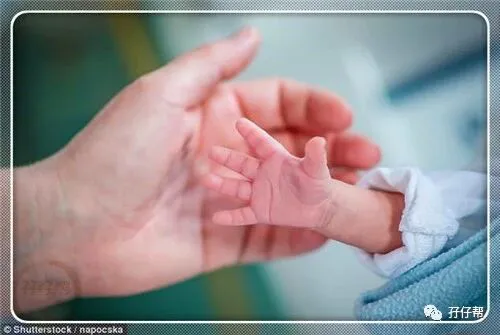
这都不是重点，没有两宝宝在身边，她比任何人都要担心，焦虑。这才是精神上最大的煎熬！
若任由这样的负面情绪恶性循环，对一心一意坚持母乳喂养的宝妈并无好处，对产后恢复也是百害无一利。
因此，作为双胞胎宝宝的家属，请不要忘记有一位“大宝宝”也需要你们关心呵护。
★探视新生儿要分工合作
当你从手忙脚乱的杂碎事情中终于缓过神来，不要忘记去探视下你的双胞胎宝宝哦！
有些医院还会安排主治医生跟家属简单介绍患儿病情。
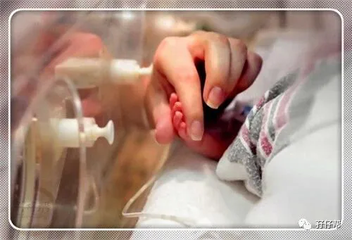
注意！找逻辑思维，理解能力比较好的人去找医生谈。医生时间有限，总是力求简短意赅。
因此，高度要求一个听力水平高，理解能力好，响应速度快的家属去跟医生沟通。
跟医生了解两宝宝的病情之前，可事先把问题准备好，做个备忘录，免得一紧张忘记问。
当然，你的问题基本上不会得到完美答复，医生只会简要告知两胎儿的情况，以及接下来的治疗方案。一些更细节的东西，医生一般不会详细说。
若实在很好奇，可以查看每日清单费用，可查到用药记录方面，并从中判断到医院对两宝宝的治疗，如是否照蓝光，是否有用抗生素，是否有打营养针等。
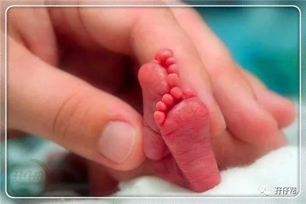
放宽心把两宝宝交给专业医护人员吧。
与其看那些听着吓人的专有名词，不如赶紧去探视区，把你最深情，最殷切的期盼穿过厚重的玻璃传递给你的两个小宝贝，让他们感受到你们的爱和期待。
总之，记住一个浅显的道理，只要医院不给你电话，那就是好消息。
这里有个小提示：
如果两宝宝还没有起名字，通常默认是孕产妇的姓名+备注大宝或小宝，如圆圈妈大B，圆圈妈小B
因此当你看到病历本上写着你媳妇的名字后面带着大BB和小BB，不要犹豫了。
你没有认错！是你的两个崽！赶紧认了吧！
我能下床走动后，第一次去探视圆圈，看到我的大名赫然贴在大门口，一脸懵逼，边上还有人戏谑着：天呐，怎么有新生儿的名字叫##大BB，##小BB。
04
有人说，早产儿是折翼天使！
我并不这么认为。
双胞胎宝宝大多数是早产儿，刚出生后就要过六关斩五将，历经各种生死劫难。
他们比其他宝宝更早接触到这个世界物竞天择，优胜略汰的残酷自然法规的考验。
乐观点讲，他们的抗压能力已经远远地甩掉了同龄宝宝好几条街。
这样的孩子，会比一般人更加坚强，连生死关都能跨越还有什么问题不能解决的呢？
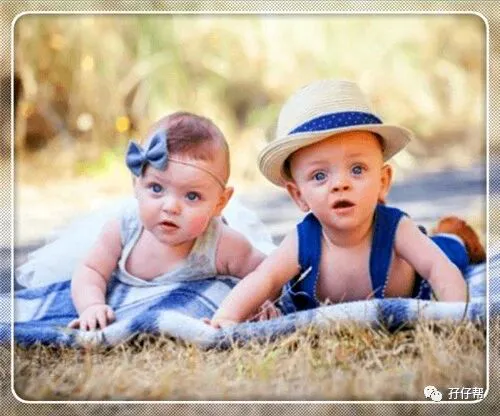
你们说，这样的宝宝是折翼天使吗？
套用一句古语：天降大任于斯人也，必先苦其心志，劳其筋骨，饿其体肤，空乏其身…
熬过生死考验的早产儿他日必成大器！
（….嗯！我就是这样安慰自己的….）
最后，祝全天下的早产儿宝宝们，一切顺利，平安出院，回归爸爸妈妈的怀抱。
（….写这句话的时候，居然鼻子发酸，再一次为坚强的宝宝们点赞！）

重要通知
孖仔帮有双胞胎爸爸专属群啦！
在此你们可以互相交流下初为人父的喜悦和已为人父的辛酸，还有你们男人间的家长里短…尽情唠嗑吧！
入群方式：＋圆圈妈的微信(sgguy-com)，我会发群聊邀请给你们。欢迎准爸爸的加入双胞胎育儿大家庭，一起分享双胞胎育儿经。
END
本文系圆圈妈sgguy-com原创，来源于孖仔帮，专注双胞胎孕期育儿经验分享，著作权归孖仔帮所有。
105:同卵双胞胎的天敌--双胞胎输血综合征
201:双胞胎与唐氏筛查---美丽的邂逅
212:原来双胎妈妈可以这样数胎动，好简单啊
215:双胎子宫日记系列|（下）你看不看？双胞胎妈妈直播剖腹产全过程
302:喂养干货||如何训练双胞胎宝宝睡整夜觉
306: 真人示范！双胞胎妈妈高难度喂母乳技巧
404:双胞胎家庭生存技巧01：舍不得孩子套不住狼，新生入园开学季必备
714:那个每天晚上9点钟才到家的双胎妈妈，失业了…
219双胞胎准爸爸的生存指南：不做猪一样的队友，活着出来喜当爹
220双胞胎准妈妈，其实你的产检方式一直搞错了…
222:看过这份最简单的双胞胎宝宝用品囤货清单，其他的都是将就
我猜你肯定喜欢看上面的文章，对不对嘛？关注孖仔帮，回复文章前面的数字编号即可阅读。
长按识别二维码关注我们
关于这个号
谢谢关注！我是圆圈妈
85后，全职双胎妈妈
家有孖仔男宝两枚，圆圈&圈圈
双胞胎育儿公众号：孖仔帮
旨意分享双胞胎育儿经验帮助双胞胎家庭
有经验可循
有组织可靠
希望我的经验对您有所启发
期待与您一起共享双胞胎育儿经
孖仔帮目前有4个微信社群
孕期群，喂养群，闲置群，双胞胎爸爸专属群，
如需入交流群，请+圆圈妈的微信号sgguy-com,或扫描下方二维码

由圆圈妈邀请入群
更多孖仔帮双胞胎原创育儿文章请猛戳 "阅读原文" ，或者直接上圆圈妈的个人博客。
博客链接：https://www.sgguy.com/twinsbang


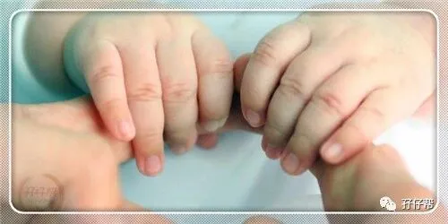